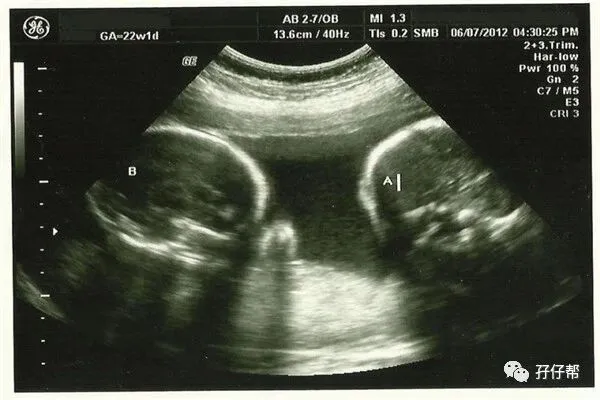
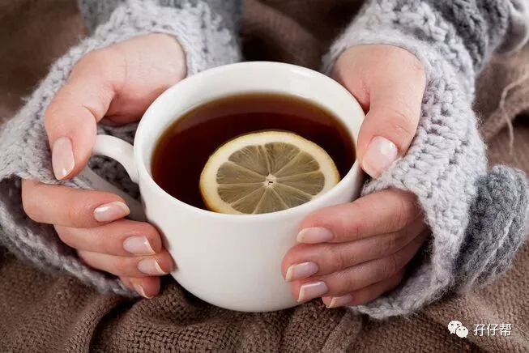
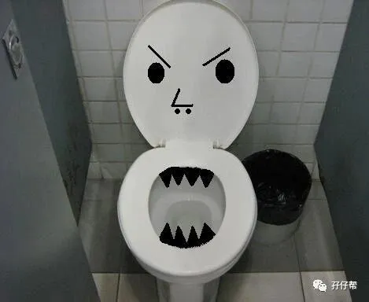

⬆⬆关注孖仔帮，与您分享双胞胎育儿经⬆⬆
文|圆圈妈 一个文思如尿崩的双胎妈妈
图|来自网络
【01】两胎儿的发育情况
孕22周的胎宝宝有木瓜那么大了，从头部到臀部长约23.3CM，约326G▼
孕22周的双胞胎胎儿发育图▼
B超孕22周的双胞胎胎儿影像图▼
【02】圆圈妈的孕期回忆录
Ⅰ 发现第二条妊娠线
进入孕22周，发现我的肚脐眼到心窝口那一段冒出一条细细浅浅的线，俨然是下腹部妊娠线的延长线，而肚脐眼处就是一个换乘站！
也就是说，我整个肚子就被一条妊娠线横穿了，不偏不倚就是开膛破肚的刀法。
我突然间想到，医生剖腹产是不是沿着妊娠线，整个肚子剖开的呢？（呵呵，没文化真可怕。）
Ⅱ 肚子会发紧发硬
最近连续好几个晚上睡到半夜，会感觉肚子收紧了，硬邦邦的，不像是胎动的，没有痛感，一会儿就恢复正常。
从网上了解到，有人说是假性宫缩，有人说是子宫膨胀的撕裂痛，有人说是心理作用….
我倒希望真的是我心理作用，才22周就假性宫缩，要熬到28周第一个坎还有个把月的时间，这也太残忍了！
被这样一层层的心里诱导，每次肚子收紧后醒来就难以入睡，盯着天花板在黑暗中煎熬着，各种不好的想法不断在我脑海里上演，越想越乱，越乱越心烦...于是就失眠了。
Ⅲ 我的挑食症复发
也许是孕激素使然，也许是先入为主的抵触心理，我对婆婆的厨艺真的不敢恭维，菜放多点蒜就觉得不好吃，明明没啥影响，非要鸡蛋里挑刺。
每次想敞开肚皮吃，一看到端上来的饭菜就食欲全无，刚开始我会假装好吃，可是我尽力了，装不下了！
圆圈爸打圆场说婆婆的厨艺是他们村里数一数二的，可是在一个大肚婆的眼里，即便是新东方或是蓝翔技校的厨师做出来的菜也极有可能是一坨屎。
好在婆婆早餐给我煮的面条味道不错，为了不委屈我们娘三，我特意早餐多吃点，几乎可以顶午餐的分量，一大碗面条下肚，还能撑下红薯，玉米等杂粮，再喝一杯豆浆也能HOLD 住。
Ⅳ 我像个随时都会炸毛的母狮子
深圳的4月份，天气渐渐开始变热了，加上睡眠质量不好，人也很烦躁！我的情绪越来越失控了。
似乎全身上下都不归我管了，一点鸡毛蒜皮的小事都能轻易燃爆我身上的火苗细胞。
原来，怀孕能让某些女性细思极恐，真的不是说着听听的，激素分泌分分钟可以把人变成情绪的奴隶，做出一些让自己都匪夷所思的事情，甚至丧失自我。
这对于像我这么极端的人，确实太残酷了。
☞☞TIPS☜☜：这个提示是专门给宝爸看的，对于情绪失控的孕妇，千万不要觉得她“作”。
你试试，往你肚子上绑一个10斤重的大西瓜，吃饭睡觉上厕所24小时不松绑，坚持10个月，还要加点装饰：腰酸背痛腿抽筋，恶心呕吐，便秘…
想想就颤抖，还怎么作？如果这也能作出来，好吧，金马影后非媳妇莫属。
BTW,有一个一劳永逸的绝招。
遇到冥顽不灵的气包子孕妈，你可以带着她去买买买，所有事情都会烟消云散。
不要问我为什么，女人嘛，没那么复杂，只需要准备好足够的人民币就行了。
爸爸群有一宝爸偷偷告诉我，他媳妇怀孕后，居然由原来的娇气公主变成母性大发的良家少妇。
天啦，假如这是真的，那这位准爸爸，简直是领了500万大奖的第二天又被通知还有500万忘记拿了。
Ⅴ 我感冒了
可能是内忧外患导致免疫力下降，再加上春夏交替，忽冷忽热的天气，我居然感冒了，双侧扁桃体肿痛，喉咙像火烧一样难受。
按照以往感冒的流程，如无意外，接下来会喉咙痒痛，接着咳嗽，流鼻涕，继续咳嗽。
咳嗽会引起腹压增加，这意味着可能会引起宫缩，我必须做点什么减轻感冒症状。
我翻遍了药箱，没有一个药敢吃，几乎都写着孕妇慎用！好在我平时感冒也几乎不吃药，这次我也打算硬扛！
感觉只是咽喉不舒服，没有其他症状，也没有影响到我的食欲和睡眠，我想应该只是轻微的感冒。
我狂喝水，用滚烫的水泡柠檬，然后不停地一杯接着一杯喝！十分钟跑一次厕所。
奇迹出现了。
三天后，我的喉咙只是干痒，并没有咳嗽，我庆幸极了。
☞☞TIPS☜☜：季节更换，容易感冒，如果你不幸中招，不能乱吃药，民间那些治感冒的偏方，土方子也要谨慎使用。
如果感冒症状较轻微，可以静养在家多喝温水或柠檬水，多休息，少活动。
如果症状较严重，已经影响到正常饮食睡眠，那别犹豫了，去看医生吧。
必须在医生的指导下吃药，别图省事私自买药吃。即便药店的人告诉你孕妇可吃，你都要有自己的判断能力。
√请看孕期用药的原则√
能不用尽量不用，一定要用的话，尽量避免在停经5-12周使用，选择对胎儿影响最小的药物，选择最低的有效剂量和最短疗程，孕期用药的目标是控制症状，而不是根治疾病。
来源：段涛大夫《怀孕生孩子那些事 之 那些孕期经常用到的药物》
Ⅵ 我离幸福只差一个马桶的距离
这个孕周的我对上班充满了恐惧感，号称甲等写字楼居然整栋楼都找不到一个坐厕，在公共场所上厕所成了我的噩梦。
我只能采取半蹲的姿势解决，还好大学期间有辅修过太极拳，用扎马步的姿势小便虽然不是很雅观，但门关上了谁知道...
可是遇到“上大号”就不行了，一直这样扎马步的姿势，再武功高强的武林高手遇到“孕肚”也只能歇菜了！
我不得不采取以前的下蹲姿势，双脚站累了，就用双手代替下双脚，到最后双手双脚着地，差点要跪着拉完，好半天才能站起来。
我不禁在心理嘶吼着：苍天啊，我什么都不要，我只要马桶！
从那以后，不管多么赶时间，我都要在家里解决完大号才去上班，我再也不想再来一次那种狼狈了。躲在密闭的小隔间，有苦说不出，真的很绝望！
☞未完待续☜
上期推文:
连载（一）|圆圈妈双胞胎怀孕过程第4周
连载（二）|圆圈妈双胞胎怀孕过程第5周
连载（三）|圆圈妈双胞胎怀孕过程第6周
连载（四）|圆圈妈双胞胎怀孕过程第7周
连载（五）|圆圈妈双胞胎怀孕过程第8周
连载（六）|圆圈妈双胞胎怀孕过程第9周
连载（七）|圆圈妈双胞胎怀孕过程第10周
连载（八）|圆圈妈双胞胎怀孕过程第11周
连载（九）|圆圈妈双胞胎怀孕过程第12周
连载（十）|圆圈妈双胞胎怀孕过程第13周
连载（十一）|圆圈妈双胞胎怀孕过程第14周
连载（十二）|圆圈妈双胞胎怀孕过程第15周
连载（十三）|圆圈妈双胞胎怀孕过程第16周
连载（十四）|圆圈妈双胞胎怀孕过程第17周
连载（十五）|圆圈妈双胞胎怀孕过程第18周
连载（十六）|圆圈妈双胞胎怀孕过程第19周
连载（十七）|圆圈妈双胞胎怀孕过程第20周
连载（十八）|圆圈妈双胞胎怀孕过程第21周
下期预告：
连载（二十）|圆圈妈双胞胎怀孕过程第23周
本文系圆圈妈sgguy-com原创，来源于孖仔帮，专注双胞胎孕期育儿经验分享，著作权归孖仔帮所有。
---☜✪ The end ✪☞---
关于这个号
谢谢关注！我是圆圈妈
85后，全职双胎妈妈
家有孖仔两枚，圆圈&圈圈
双胞胎育儿公众号：孖仔帮
ID:twinsbang
旨意分享双胞胎育儿经验帮助双胞胎家庭
有经验可循
有组织可靠
希望我的经验对您有所启发
期待与您一起共享双胞胎育儿经
孖仔帮目前有5个微信社群
孕期群，喂养群，闲置群
双胞胎爸爸专属群，双胞胎专属教育群
如需入交流群
请+圆圈妈的微信号sgguy-com
或扫描下方二维码
由圆圈妈邀请入群
添加请注明：
宝妈/宝爸，孕期/已生
长按二维码加圆圈妈好友
往期精彩文章回顾：
105：同卵双胞胎的天敌--双胞胎输血综合征
106：官宣：双绒双羊，单绒双羊，单绒单羊傻傻分不清？一篇消除你所有疑问
215：双胎子宫日记系列|（下）你看不看？双胞胎妈妈直播剖腹产全过程
219：双胞胎准爸爸的生存指南：不做猪一样的队友，活着出来喜当爹
306：真人示范！双胞胎妈妈高难度喂母乳技巧
312：为出生就进NICU的双胞胎新生儿，我必须告诉你这5个通关秘籍
407：嘿！双胞胎孩子的亲子阅读攻略，要来一份吗（1--2岁阶段）
605：看过这份最简单的双胞胎宝宝用品囤货清单，其他的都是将就
608：听说...你在找双胞胎育儿神器，这事儿我熟！
723：双胎妈妈，为什么我不建议你这样坐月子...
我猜你肯定喜欢看上面的文章，对不对嘛？关注孖仔帮，回复文章前面的数字编号即可阅读。
长按识别二维码关注我们
更多孖仔帮双胞胎原创育儿文章，
请猛戳 "阅读原文"
或者直接上圆圈妈的个人博客。
博客链接↓↓
https://www.sgguy.com/twinsbang
#重磅互动#
评论区聊一聊
你希望圆圈妈写什么育儿经验干货？
随便提，万一下篇就写了呢？
喜欢记得来一个


